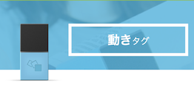

Maind Map
7/12(thu)3,4講時
MY Pinterest
今回はPinterestというSNSを使い自分の興味あるものや好きな物の画像の収集をして、その収集した情報をもとに自己分析を行った。
自己分析の仕方にはマインドマップという手法をとった。
今回自己分析というものをしてみて自分は世界を見て回りたいのかなとかアニメや漫画に出てくるような近未来SFチックなものに興味があるのかななど色々自分を今一度見つめ直す機会を作れた。
MESH
7/13(fri)~7/25(wed)1-4講時
今回は前回の授業で行なったマインドマップ作成から似た傾向の人達を集めて４つのグループに分けた。
そしてチームごとにMESHというIoTブロックを使いそこからMESHオリジナルレシピを作るということをした。
MESHとは？
自分たちのチームのテーマは旅行。
なので旅行の時にあったらいいなと思えるようなレシピを考えることにした。
旅行に関係するサービスや問題点などの意見をチーム内で上げた.
目覚まし時計

このブロックを使って旅行先で寝坊しないように目覚まし時計を作ることにした。ただ目覚まし時計を作っても面白くないので色々な声でおはようと言ってくれるようにした。
意図としては友人や家族など様々な人の声を入れることで旅先での寂しい思いを和らげるという意図がある。
さらに、同じ声の人が３連続で「おはよう」と言わないと永遠に止まらないようなランダム要素も加えた。
ちなみに今回は「おはよう」という声を自分の声にして使った。
スリ対策

これは人感に反応するブロック。
これを使ってスリ対策をできないか？ということを考えた。
財布を抜き取られた時に抜き取った人に反応して携帯から音がなり持ち主に知らせるというもの。
しかし自分が財布を使う時にまで音が鳴ってしまった。これでは良いサービスという訳にはいかなかったため考えを改めた。

次に使ったのが動きに反応するこのブロック。
このブロックを財布の中に入れて、とられた時の動きに反応してさっきと同じように携帯から音がなり持ち主に知らせるというもの。
しかしこちらも自分で財布を使う時にまで音が鳴ってしまった。
さらにいうと歩いているだけで音が鳴ってしまうという致命的な問題も見つかった。
なのでこちらも良いサービスと呼べるものにはならなかった。
まとめ
自分たちは目覚まし時計のアイデア出しやMESHを使って試行錯誤している時楽しかったので良いものができたかな？と思っていたがプレゼンでの手応えはあまりなかった。
逆にあまり良いものが作れなかったと思っていたスリ対策の方がいろんな意見をもらえた。
想定外なことだったがこういうケースもあるのだと学べたのでよかった。
今回「旅」というテーマでたくさんのアイデアが出ると最初は思っていたが意外とそんなに意見は出なかった。
今までの旅行を思い出して不便だったことなどを思い出してそれを意見として出した。
アイデア自体は出るがMESHと結びつけるのが難しかったり、MESHでは実現が難しいものだったりとなかなかうまいこといかなかった。